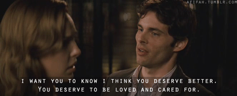

For the Love of Friends
June 23, 2021
Lily Weiss is about to be a bridesmaid in five weddings, all taking place over the course of two months. On top of that, her mother continually points out Lily's own single status in the wake of her two younger siblings getting married. To deal with all this stress, Lily creates a blog to talk about her experiences.
This book was a fun, fast read for me. I found myself getting really engrossed in all the drama, getting reminded of both 27 Dresses and events that felt like they were right out of a reality TV drama.
I loved the way that the book portrayed realistic sibling-parent relationships, sibling-sibling relationships, and the way that those two might intersect and affect each other. The growth arcs in the Weiss family throughout the book were well done.
I absolutely loved the development of the romance in this book - a best-friends-to-lovers situation? With a sunshine character that develops with actions that feel almost out of a rom-com?
However, I'm not sure how I felt about the fallout of Lily's blog going public and how the resolution between all the various characters was handled. It felt like all the very valid experiences (backstabbing bridesmaids, continuous body shaming, digs about how she's still single at her age among other stresses) were almost dismissed by the brides themselves except for one or two cases (out of the FIVE she's a part of). Yes, a wedding is a day for the bride. Yes, there was a breach of trust when Lily was blogging about these personal things in her life. No, that does not mean that hurting someone that you are supposedly close enough to ask to be in the bridal party by making them feel like they don't matter in any capacity is alright, and I wish there was more acknowledgment among the brides of this fact. I also felt like Lily was too harsh on herself regarding the fallout, and with the brides as a whole reacting the way that they do when it came to acknowledging the harm that they did to Lily, it felt like we were getting more of the same attitude of "it's my day so you don't matter" from the brides overall that caused Lily to feel like she had to create a blog to vent in the first place.
That being said, Lily's growth arc was well done, and her acknowledgment and following through actions on her own end were great.
Overall, a fun read that I'd recommend if you enjoy reading about bridezillas, snark, best friends to lovers, accurate mother-daughter relationships, and wedding drama.
Thank you to Lake Union Publishing and NetGalley for the ARC.

More about For the Love of Friends here:

Title: For the Love of Friends
Author: Sara Goodman Confino
Lily Weiss is her mother’s worst nightmare: thirty-two and single—the horror! She’s also a talented writer but hides behind a boring job at a science foundation. To her friends, she’s reliable and selfless, which is how she winds up a bridesmaid in five weddings in six weeks. Anything for her three best friends and two (younger) siblings, right? Even if her own love life is…well, she’d rather not talk about it. To keep her sanity, Lily needs a safe place to vent.
And so her anonymous blog, Bridesmania, is born. The posts start pouring out of her: all the feels about mom-zillas, her vanishing bank balance, the wicked bridesmaids of the west, high-strung brides-to-be, body-shaming dress clerks, bachelorette parties, and Spanx for days, not to mention being deemed guardian of eighty-eight-year-old Granny (who enjoys morning mimosas in the nude) for her brother’s destination wedding.
So far the blog has stayed anonymous. But as everyone knows, few things online remain secret forever…
When all is said and done, can Lily help all five couples make it to happily ever after? And will her own happy ending be close behind?